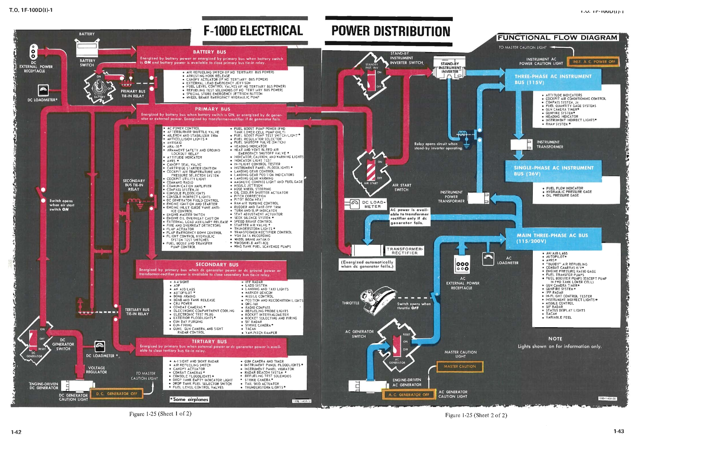
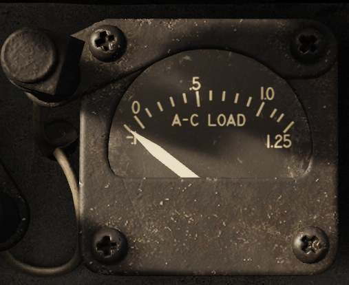
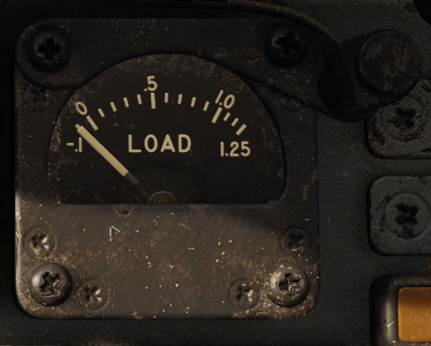
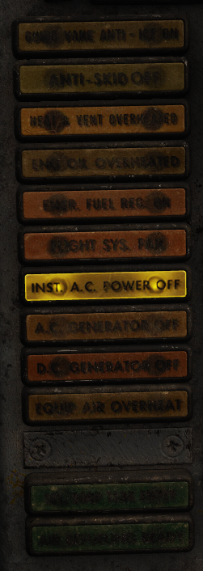
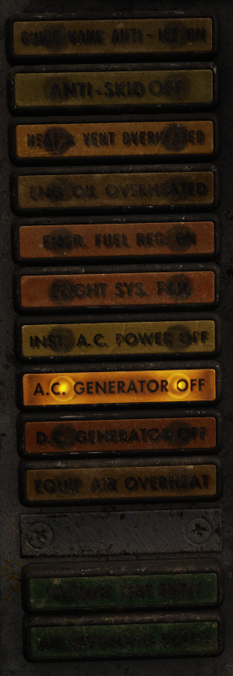
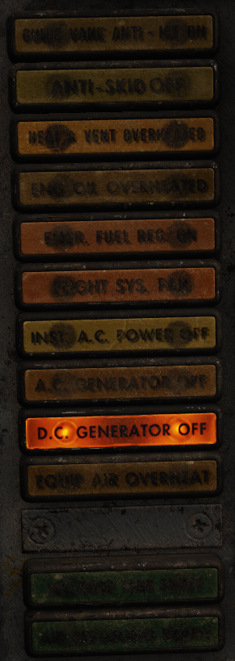
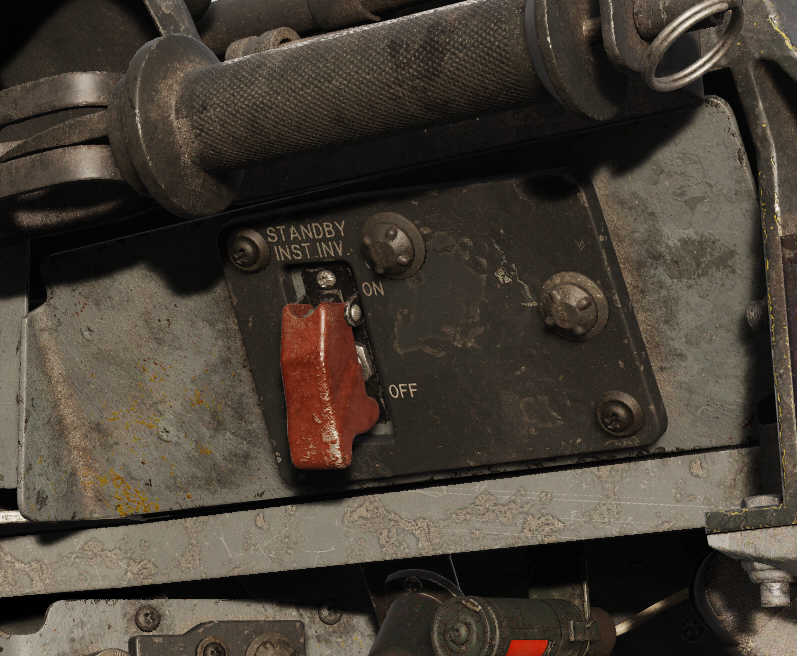

Electrical System

Introduction
The F-100D features two mostly separated electrical systems:
- An AC System powered by the AC Generator or external power
- A DC System powered by the DC Generator
- Battery (or external) power
Each system is powered independently, but in the event of failures, it is possible to partially power a failed system using a functioning system.
DC System
The DC System normally receives power from the battery and DC generator. Alternatively, power can also be received externally.
DC Generator
The engine-driven DC generator provides power to the DC systems under normal operation.
Note
The DC generator connects at approximately 40% engine RPM.
Note
The DC generator only needs to be reset if an electrical fault causes it to trip off the line.
Battery Bus
The battery bus is connected directly to the battery, so that essential equipment powered by this bus is operable as long as battery power is available, regardless of battery switch position.
The battery is 24 Volt, 24 ampere hour battery. The DC Generator nominally outputs 28 Volts.
The battery bus is connected to the battery bus through the primary bus tie in relay. This relay is energized by the battery bus connecting the battery bus to the primary bus.
If there is insufficient power on the battery bus, the battery isn't connected, but if the primary bus is being energized from elsewhere (for example, the DC generator or external power), the battery bus can be kept energized. Turning the battery switch off under this condition disconnects the primary bus from the battery bus, and the battery won't be charged.
Primary Bus
Primary bus powers the aircraft's most essential equipment. It is energized by the battery bus when battery switch is ON, or energized by DC generator or external power. Energized by transformer-rectifier if DC generator fails.
Secondary Bus
Secondary bus powers less essential equipment. It is energized by primary bus when DC generator power, DC external power, or transformer-rectifier power is available to close the secondary bus tie-in relay, where then it is powered by the primary bus.
Tertiary Bus
Tertiary bus powers non-essential equipment. It is energized by the primary bus when external power or DC generator power is available to close bus tie-in relay, where then it is powered by the primary bus.
AC System
AC Generator
The engine-driven AC generator provides power to the AC systems under normal operation. The AC generator is driven by a constant speed drive powered by the engine.
Note
The constant speed drive takes up to a minute at idle power to come up to speed so that the AC generator can come on the line. To expedite this process the pilot can advance the throttle up to 72% (or until the generator comes online).
Note
The AC generator needs to be reset if an electrical fault causes it to trip off the line or the AC generator switch is placed into the off position.
Main Three-Phase AC Bus (115V)
Main three-phase AC bus powers essential equipment which demands AC power. Power is provided by the engine-driven AC generator.
AC Instrument Buses (115V and 26V)
There are two instrument buses which power vital instrument equipment. Due to their important these AC buses can both be powered by the DC primary bus using the standby instrument inverter
Controls and Indications
AC Load Meter
Current AC generator load as a percentage of its maximum load.

DC Load Meter
Current DC generator load as a percentage of its maximum load.

INST A.C. POWER OFF Light
Indicates when instrument AC buses are not receiving sufficient electrical power.

A.C. GENERATOR OFF
Indicates when the AC generator is off the line either because of insufficient drive RPM or a fault has tripped the generator.

D.C. GENERATOR OFF
Indicates when the DC generator is off the line either because of insufficient drive RPM or a fault has tripped the generator.

Standby Instrument Inverter
Transfers AC instrument bus power over to the standby instrument inverter. The is a small power interruption as the standby instrument inverter comes up to speed.
